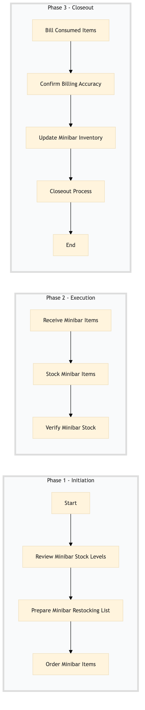

| Role | Steps |
|---|---|
| Executive Housekeeper | 1.1 1.2 3.4 |
| Pantry Manager | 1.3 2.1 3.3 |
| Housekeeping Staff | 2.2 2.3 |
| Front Desk Agent | 3.1 |
| Revenue Manager | 3.2 |
| Step | Name | Role | System | Input | Output | KPI | Dec? | Exc? | Pain Point / Risk |
|---|---|---|---|---|---|---|---|---|---|
| 1.1 | Review Minibar Stock Levels | Executive Housekeeper | Oracle OPERA Cloud | Minibar inventory report | Stock level analysis | Less than 5 minutes per room | Y | N | Inaccurate stock levels leading to over or under stocking. |
| 1.2 | Prepare Minibar Restocking List | Executive Housekeeper | Oracle OPERA Cloud | Stock level analysis | Minibar restocking list | Less than 3 minutes | N | Y | Missing items on the restocking list. |
| 1.3 | Order Minibar Items | Pantry Manager | Birchstreet Procurement | Minibar restocking list | Purchase order confirmation | Less than 10 minutes | N | Y | Delays in item delivery. |
| 2.1 | Receive Minibar Items | Pantry Manager | Birchstreet Procurement | Purchase order confirmation | Received items list | Less than 5 minutes | Y | N | Damaged or incorrect items received. |
| 2.2 | Stock Minibar Items | Housekeeping Staff | Oracle OPERA Cloud | Received items list | Minibar stocked | Less than 15 minutes per room | N | Y | Incorrect item placement. |
| 2.3 | Verify Minibar Stock | Housekeeping Staff | Oracle OPERA Cloud | Minibar stocked | Stock verification report | Less than 5 minutes per room | Y | N | Incorrect stock levels after restocking. |
| 3.1 | Bill Consumed Items | Front Desk Agent | Oracle OPERA Cloud | Stock verification report | Guest bill with minibar charges | Less than 5 minutes per room | N | Y | Incorrect billing of items. |
| 3.2 | Confirm Billing Accuracy | Revenue Manager | Oracle OPERA Cloud | Guest bill with minibar charges | Billing confirmation | Less than 5 minutes per room | Y | N | Disputes over billing accuracy. |
| 3.3 | Update Minibar Inventory | Pantry Manager | Oracle OPERA Cloud | Billing confirmation | Updated inventory record | Less than 5 minutes per room | N | Y | Outdated inventory records. |
| 3.4 | Closeout Process | Executive Housekeeper | Oracle OPERA Cloud | Updated inventory record | Process completion report | Less than 5 minutes per room | N | Y | Incomplete process documentation. |
The process of restocking minibars and billing guests for items consumed at Marriott full-service hotels.